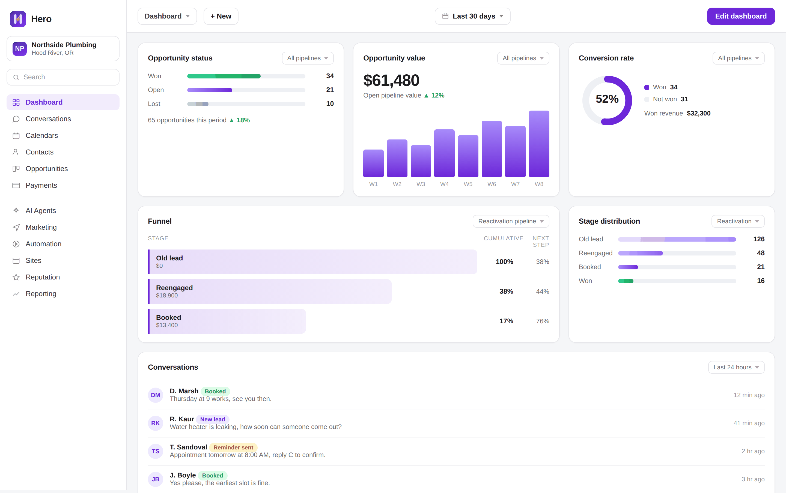

Your leads leak out between the phone ringing and the invoice getting paid.
I install lead capture and follow-up on your number and your calendar: missed-call text-back, instant replies to new leads, quote chasing, appointment reminders, review requests, and a CRM that holds all of it.
Book a demoI'm taking three founding clients at a rate locked for 12 months, one exterior cleaning company per market.

I built this for my own window cleaning business before I sold it to anyone.
I run a window cleaning company. The system on this page is the one I built to stop losing my own jobs, and I ran it on my own phone for months before I offered it to anyone else. The numbers below are mine, not a client's.
-
Jobs per month
Before 5–7 After 15–28
-
Inbound calls that became jobs, counting the calls I didn't answer live
Before 50% After 85%
-
Time to respond to a missed call
Before About a day After Under 60 seconds
What these are: my own window cleaning company's figures, October 2025 to August 2026, measured the same way before and after. Every figure on this page covers that period and comes from my own business. No client's numbers appear anywhere on this site.
The close rate moved for one reason. Calls that used to go to voicemail while I was up a ladder now get a text back inside a minute, so the homeowner stops working down the list.
Text this number and watch it answer.
This is a live number running the same instant reply I install. Send it anything — a question, your name, one word. You'll have a text back before you've finished reading this section. That is the whole mechanism, working, before you've spoken to me.
(509) 774-7789Message and data rates may apply. Reply STOP to opt out, HELP for help. See the privacy policy.
Those are my numbers. The call is where we go looking for yours.
Book a demoWhy this comes before advertising
You are already paying to make the phone ring — referrals, Google, the van, the work you did last season. Some share of those leads is lost to slow follow-up, and that share is revenue you have already paid to generate. Catching it is the cheapest work available to you, and it is finished when it's done.
Advertising is a separate conversation, and it can come later if it makes sense for you.
None of this is a lead problem.
The phone rings. That was never the hard part. The jobs go missing in the gaps between the ring and the invoice, and you're usually thirty feet up when it happens.
- The call you took at the top of the ladder. Which is to say the one you didn't take. Both hands on the pole, phone in the van, and by the time you're down it's been forty minutes.
- They called three companies. They booked whoever picked up first. It usually isn't the one still running a surface cleaner.
- The quote you sent Friday. They said they'd talk it over with their wife. Nobody chased it, and by Monday it was somebody else's driveway.
- The machine drowning out the phone. Two hours of pressure washing, four missed calls, no voicemails. Nobody leaves voicemails.
- The estimate you drove out for. Half an hour there, half an hour back, a number handed over at the door, and then nothing.
- The gutters you cleaned last autumn. Same house, same gutters, filling up again. They haven't heard from you since, so this year they'll search.
Four steps, in this order.
- We walk your lead path
On the demo call, start to finish: how a call comes in, what happens when you can't take it, what happens to a quote after you send it. I show you where the jobs are dropping out.
- I build it in your account
Your own Hero account, your number, your calendar, your services and your prices. You approve every message before a single one goes out. You build nothing.
- I start carrier registration
US carriers require every business to register before it can text customers. I file it and I start it first, so the clock is already running while the rest gets built. This is the piece nobody can put a firm date on.
- It runs, and you go back to work
Missed calls get answered, quotes get chased, appointments get reminded, finished jobs get asked for a review. Replies land on your phone. You pick up the ones worth your time.
Where your jobs are going, in your numbers.
This is the walk-through from step one, except you're driving. Set four sliders to your business and the path fills in. Every percentage underneath it is on screen and draggable — there is nothing hidden in the math.
This part works out where your jobs are going from four numbers you set, so it needs JavaScript switched on. The short version: the money goes missing on calls you can't take, on quotes nobody chases, on empty driveways, and on customers who never hear from you again. We go through all four on the call.
What you get, in plain terms.
Not a list of features. This is what stops depending on you remembering.
- Every missed call gets a text back in under a minute.
From your number, with a link to book. The homeowner stops dialling the next company because somebody already answered.
- Every web and Facebook lead gets a reply the moment it lands.
Six in the morning, ten at night, on a roof, doesn't matter. They hear back while they're still on the page.
- Every quote that goes quiet gets chased.
Not once. Over the following week, by text and email, and it stops the moment they book or tell you no.
- Every booked job gets a confirmation and two reminders.
When they book, then 24 hours out, then an hour out. You stop driving to empty driveways.
- Every finished job gets asked for a review the next day.
The day after you pack up, while they're still looking at clean windows. Reviews get watched, so your profile isn't sitting stale.
- Every old customer gets a check back.
Months later, when the gutters are filling again. The list of people who already paid you is the cheapest list you own.
- Every lead, text and job sits in one place.
Not sticky notes on the dash and a phone full of half-finished threads. One thread per customer, open it from the van.
- You can text customers legally.
Carrier registration filed, consent set up properly, opt-outs handled. This is why some businesses find their texts quietly stop being delivered, and it's included.
How many of those are running in your business this week?
Book a demoWhat you're going to ask me anyway.
What does it cost?
There's no single number, and I'd rather say that than put a fake one on a website. It's a monthly fee with no long contract, and what moves it is how much of the path you want covered — someone who only wants missed calls answered pays less than someone who wants quotes, reminders, reviews and the CRM handled too. A one-van operation and a four-crew company aren't the same build.
You get the exact figure on the demo call, before you're asked to decide anything, and it doesn't change after.
Am I locked into a contract?
No. Month to month, cancel whenever you want. If you cancel, your contacts and your conversation history go with you.
How long does setup take?
The build is the quick part — your account, your messages, your calendar. The wait is carrier registration, which every US business has to clear before it can send texts. That runs on the carriers' clock, not mine, and I won't give you a date I can't hold.
I file it on day one so the clock is already running while everything else gets built.
What if it doesn't work?
You cancel and stop paying. There's no contract to buy your way out of and no data held hostage.
What I won't tell you is that it can't fail. It works by catching leads you're currently losing, so if you answer every call live, follow up every quote the same day and already ask every customer for a review, there's less here for you. That's a real answer and it's worth finding out on the call rather than after you've paid me.
Why is there a founding rate?
Because I need three exterior cleaning companies I can point to. I've run this on my own business; I haven't run it on three other people's yet, and that's worth a discount to you and worth more than the discount to me.
Three companies, one per market, rate locked 12 months. After the three are taken it's standard pricing. A competitor across town can't buy the same system while you're running it.
Does this work for a one-van operation?
That's who it was built for. I built it for my own window cleaning business when I was the one answering the phone, and the person who answers their own phone is the person losing the most to missed calls — because you can't answer it and work at the same time.
A bigger crew with an office manager already catches some of this. You don't.
Are ads included?
No. This is follow-up only: catching and converting the leads you already get. I'd rather fix that first, because advertising into slow follow-up costs you more to learn the same lesson.
If advertising makes sense for you later, that's a separate conversation and a separate decision.
Do I have to change the software I already use?
Not necessarily. Some companies keep what they use for scheduling and let this handle the lead side. Others would rather run everything in one place and move it over.
Either works. We look at what you're running on the call, before anything changes.
Will it sound like a robot?
The messages are written for your business and you approve every one before it goes out. Short, plain, the way you'd actually say it. Change any of them whenever you want.
Fifteen minutes, and I'll show you where your jobs are going.
We walk your lead path together on the call. If there's nothing leaking, I'll tell you that and you'll have lost a quarter of an hour.
Founding client pricing: three spots, one exterior cleaning company per market, rate locked 12 months. 3 still open.
Book a demo